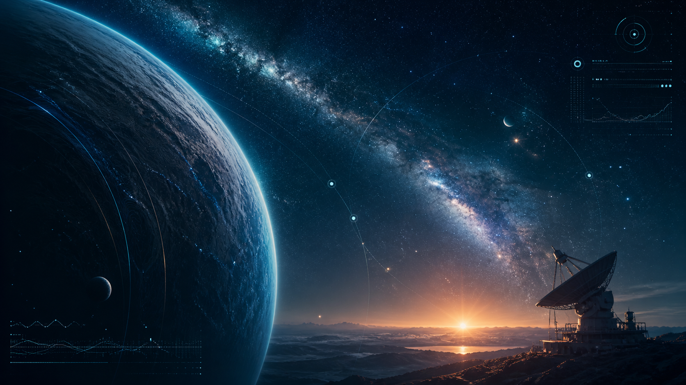
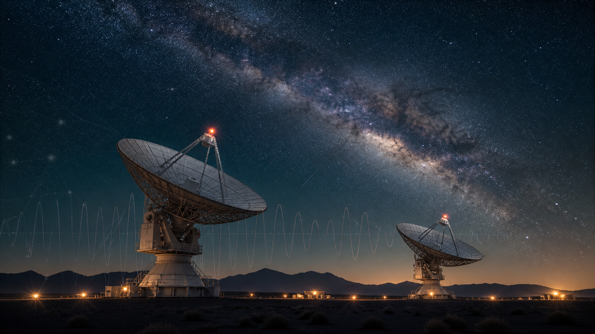

Biswajit Poster
Main poster material from the Master-Thesis-2024 poster and seminar archive.
I am an astrophysics graduate with a background in Electronics and Communication Engineering. My work sits between astronomical instrumentation, optical diagnostics, environmental monitoring, feedback-controlled experiments, brown dwarf research, and Python-based scientific analysis.


Research experience across optical systems, laboratory instrumentation, sensor-driven experiments, and scientific analysis.
My profile connects astrophysics with practical engineering: optical path behaviour, environmental data, detector-plane stability, hardware response, and feedback logic.
A short overview of my academic path, research interests, and technical working style.
I completed my MSc in Astrophysics with Advanced Research at the University of Hertfordshire, where my dissertation focused on closed-loop feedback control for EXOhSPEC. Before that, I completed a BTech in Electronics and Communication Engineering, which gave me foundations in instrumentation, embedded systems, signal handling, communication systems, and hardware-based experimentation.
My interests include exoplanet spectroscopy, astronomical instrumentation, optical systems, radial-velocity methods, brown dwarfs, satellite laser ranging, and experimental approaches where engineering and physics meet.
I enjoy projects where theory and hardware interact directly. My approach usually involves designing a setup, testing behaviour experimentally, analysing data, modelling system response, and refining the setup through iterative improvement.
EXOhSPEC stands for Exoplanet High-Resolution Spectrograph. My current research direction explores how environmental effects, optical behaviour, and feedback strategies influence the stability of this instrument platform.

This work involves thermal control, environmental monitoring, optical path behaviour, adaptive correction ideas, and Python-based analysis. The project is still in progress, so I present it as an evolving research programme rather than a finalised result.
I have organised supporting material from my MSc instrumentation work in a dedicated GitHub repository. It includes thesis material, MaxIm DL notebooks, Python code, AO control material, Arduino/BME sensor code, seminar/poster content, and related project resources.
My EXOhSPEC stabilisation work was carried out under the supervision of Professor Hugh Jones and Professor William Martin at the University of Hertfordshire. I am grateful to Professor Jones for research direction, regular academic feedback and support in shaping the scientific motivation of the project. I am also grateful to Professor Martin for practical optics guidance, critical discussions, and support during the alignment and experimental development of the system.
Started MSc research direction and initial EXOhSPEC engagement, focusing on the instrument problem and early control ideas.
Developed dissertation work around closed-loop feedback, environmental monitoring, and optical-path-related stability questions.
Extended analysis into longer experiments, feedback interpretation, adaptive correction ideas, and figure/report preparation.
Refining the research narrative, portfolio, paper preparation, blog writing, and PhD-aligned presentation of the instrumentation work.
A focused archive for poster presentations, seminar slides, and visual research summaries.
Main poster material from the Master-Thesis-2024 poster and seminar archive.
Main MSc project presentation on the closed-loop feedback-control system developed for EXOhSPEC.
Seminar introducing the radial-velocity spectrograph landscape and the instrumentation context behind precision RV work.
Seminar material on precision laser interferometer control and its connection to path-length stability.
Seminar focused on path-length stability, refractive-index effects, and interferometric control in air.
Seminar connecting high-resolution radial-velocity spectrographs, ANDES-style instrumentation, and PID-loop implementation.
A selection of academic, laboratory, and engineering projects across astrophysics, optics, instrumentation, scientific computing, and electronics.
Work on spectrograph stability, environmental response, optical path behaviour, and feedback strategies for an exoplanet high-resolution spectrograph platform.
Supervision: Prof. Hugh Jones and William “Bill” Martin, University of Hertfordshire.

Research involving VISTA, DES, and WISE survey data to investigate candidate halo T dwarfs and substellar populations. This work was also presented in a joint project talk.
Supervision: Professor David Pinfield, University of Hertfordshire.
Team member: Berenice Laurent.

SEPnet/Lumi Space placement studying detector performance for satellite laser ranging, including microbolometer feasibility, atmospheric transmission, and link-budget analysis.

BTech project on a dimming-controlled visible light communication system using Raspberry Pi, optical/electronic hardware, and communication-system concepts.

Two-element radio interferometer project through a radio astronomy summer school, including hands-on exposure to observational setup work.

Python-based analysis of astronomy data, environmental measurements, imaging data, experimental time series, and educational physics/astrophysics tools.
Standalone browser tools that let anyone explore real observatory data and reproduce professional detection pipelines — no installation, no login. Each runs entirely in the browser via GitHub Pages.
The most complete browser-based radial velocity platform. Live NASA Exoplanet Archive · Keplerian simulation · Statistical atlas · Instrument comparison — reproduced in pure JavaScript, zero install.
Self-contained Keplerian simulator with a Lomb–Scargle periodogram and discovery mode. Take observations, accumulate a periodogram, and identify a hidden planet — the same pipeline as HARPS and HIRES.
Interactive microlensing and strong-lensing explorer. Trace light curves, Einstein rings, and caustic structures — fully browser-based.
A live snapshot of my recent public repositories. If GitHub temporarily blocks the request, the cards fall back gracefully and the rest of the portfolio remains unchanged.
Connecting to the GitHub public API.
I use this space to write about astrophysics, instrumentation, cosmology, astrobiology, scientific computing, and the questions that make science feel human.
My paper notes are a structured reading space for papers in radial velocity instrumentation, brown dwarfs, optics, experimental methods, and exoplanet science.
Personal and technical science writing on instrumentation, exoplanets, astrobiology, precision measurement, cosmology, spectra, and research life.
Swipe or use the arrows to move through the newest posts.

Black holes, neutron stars, chirp signals, LIGO, and spacetime misbehaving politely.

How tiny dips in starlight reveal planets, geometry, and atmospheric clues.

Rotating neutron stars, magnetic beams, and clocks that make normal clocks nervous.

Event horizons, curved spacetime, and a separate interactive visual lab.
blog/blog-data.json when the site is deployed.University of Hertfordshire — dissertation work centred on EXOhSPEC and feedback control.
University of Engineering and Management — engineering foundation in electronics, embedded systems, and communication technologies.
Detector and performance-related analysis for satellite laser ranging applications.
Observational analysis related to candidate halo T dwarfs using astronomical survey data, supervised by Professor David Pinfield, with team collaboration including Berenice Laurent.
A small personal astronomy-inspired clock based on my birth timestamp: 11 August 1999, 7:59 PM. These values are approximate and intended as a fun Sun–Earth–planetary analogy, not precise astrodynamics.
Time can be described not only in calendar years, but also through rotations, orbits, and planetary rhythms. This section turns a human timestamp into a small cosmic dashboard.
A simple scale ladder to give the site a more astronomy-like feel. The values are approximate and designed for perspective.
A simple astronomy-inspired location summary. These are approximate educational values designed to make the page feel more interactive and cosmic.
Earth → Solar System → Orion Arm / Local Spur → Milky Way Galaxy → Local Group
~26,700 ly
Approximate Sun–Galactic Centre distance.
4.37 ly
Nearest stellar system to the Sun. Proxima Centauri is the closest individual star at about 4.24 light-years.
~2.54 million ly
The nearest large spiral galaxy to the Milky Way.
The Sun takes roughly 225–250 million Earth years to complete one orbit around the centre of the Milky Way.
My current age corresponds to only a tiny fraction of one Galactic year:
--
I want this website to feel more than static text. Small interactive scientific details — like a cosmic clock, scale ladder, or galactic location summary — give the page personality while staying aligned with astronomy.
I’m interested in connecting for research opportunities, instrumentation discussions, exoplanet spectroscopy, optics, detector systems, science writing, and academic networking.
I am currently most interested in astronomical instrumentation, exoplanet spectroscopy, optical systems, detector-plane stability, feedback control, and experimental research at the interface of physics and engineering.
If you like the content here, or if there is a specific astrophysics, instrumentation, physics, coding, or science-writing topic you would like me to explore, feel free to reach out. I am more than happy to discuss ideas, write explainers, or build small interactive tools around them.